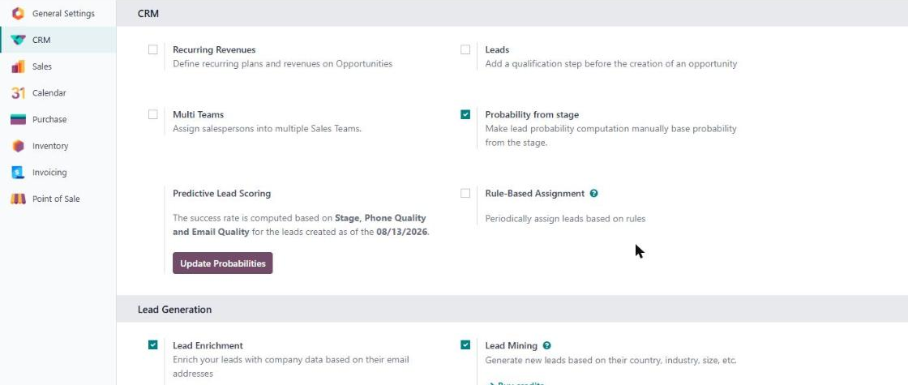
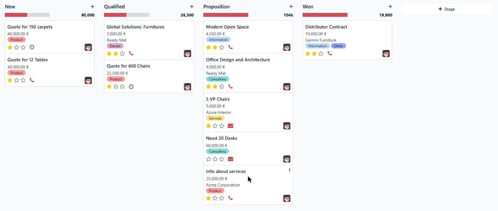
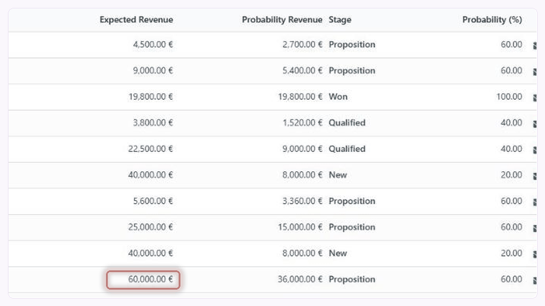
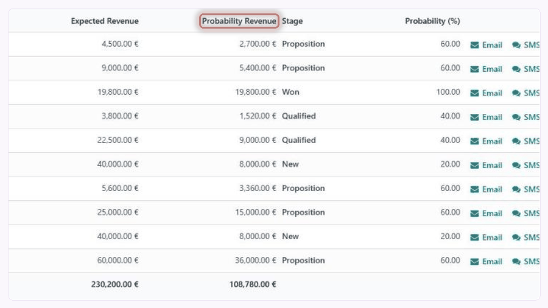
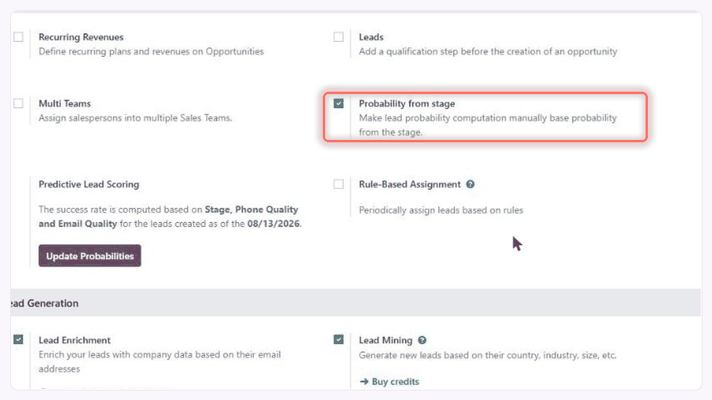
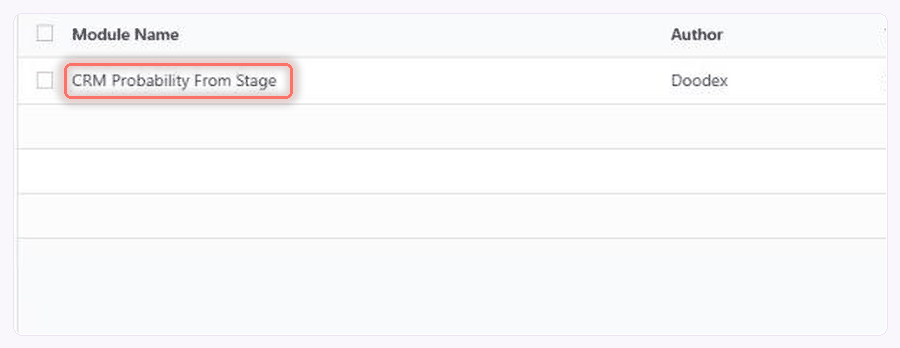

CRM Probability From Stage · Odoo 17.0 · Free
Set a win probability on every Odoo CRM stage — and get a forecast you can defend.
Odoo 17 gives a CRM stage no probability of its own, so your sales forecast rests on a prediction nobody can explain. This free module puts the win probability back on the stage: set 20% on New, 60% on Proposition, 90% on Negotiation, every opportunity follows automatically, and a Probability Revenue column totals your weighted expected revenue. One checkbox, no code, no subscription.

Four screens, from installed to forecasting
There is no hidden setup step and no developer involved. Click through the four screens below and you have seen the entire module.




What the module adds to your Odoo
A Probability field on every CRM stage
New percentage field on the stage form, default 0%.
One setting, in CRM Configuration
“Probability from stage” — a single checkbox, off until you tick it.
Probability follows the stage
Move an opportunity and its probability takes the stage's value.
A Probability Revenue field
Expected revenue multiplied by the probability, kept up to date for you.
A weighted total in the list view
Probability Revenue is a sortable column with a sum at the bottom.
Your stage percentages hold
With the setting on, Odoo's own prediction stops overwriting them.
It is free — the question is whether it fits
Ask whether this suits your pipeline
Tell us how your stages are set up and we will say plainly whether this module helps, whether Odoo's own prediction is the better answer for you, or whether you need something else. A real person replies.
Book a call
See it running on a pipeline that looks like yours.
Send us a question
Write it on the form, we answer by e-mail.
Message us on WhatsApp
Reach the team directly on +62 821-3120-5030.
Scan a code with your phone camera to open the same page. The addresses are printed above so they work even if you are reading this on paper.
Nine things it does, each one shown
Every feature below is a real behaviour of the installed module, with the field or setting it comes from named underneath. Nothing here is a plan or a roadmap item.

Feature 01
One checkbox turns it on
Go to CRM › Configuration › Settings and tick Probability from stage. Until you do, your Odoo behaves exactly as it did before installing — nothing is changed behind your back.
Setting: Probability from stage, stored as the system parameter crm.manual.compute.probability.

Feature 02
A percentage on every stage
Open any stage in your pipeline and you get a Probability field, expressed in percent. Set New to 20, Qualified to 40, Proposition to 60, Negotiation to 90 — whatever matches how your team actually sells.
Field: probability on crm.stage, a percentage, 0% by default.

Feature 03
Move a card, the probability follows
Drag an opportunity into another stage and its probability becomes that stage's percentage. No second click, no rule to write, no automation to configure. Your reps carry on working the way they already do.
How: the opportunity's probability is linked to its stage's probability and stored on the record.

Feature 04
Weighted revenue, worked out for you
Each opportunity gains a Probability Revenue value: its expected revenue multiplied by its probability. A 10,000 deal sitting at 60% shows 6,000. No spreadsheet, no formula to maintain.
Field: revenue_probability on crm.lead = probability ÷ 100 × expected revenue.

Feature 05
A weighted pipeline total in one glance
Switch the pipeline to list view and Probability Revenue is there as a column, next to Expected Revenue, with a total at the foot. That total is your weighted pipeline — and it re-totals whenever you filter or group.
View: column added to the opportunity list with a column sum, shown by default and removable per user.

Feature 06
One number per stage, for everyone
The percentage belongs to the stage, not to the individual deal, so a whole pipeline stays consistent by design and there is no per-deal number for anyone to argue with. Change the stage and every opportunity in it moves together, in one edit.
Worth knowing: typing a probability on a single opportunity does not stay local to that deal — it rewrites the stage percentage, and every other opportunity in that stage follows. Change the number on the stage, not on the deal.

Feature 07
Your numbers stop being overwritten
Odoo normally recalculates probabilities in the background from its own prediction. With this setting on, that recalculation no longer takes over your figures — what you or your stages decided is what stays on the record.
How: while the setting is on, opportunities are no longer flagged as automatically scored.

Feature 08
Untick the box to stop configuring it
Turn the setting off and the Probability field disappears from the stage form, and Odoo goes back to deciding for itself which opportunities count as automatically scored.
Worth knowing: unticking is not a full undo. While the module is installed, an opportunity's probability still follows its stage's percentage. To return your CRM to stock Odoo behaviour, uninstall the module — that is the clean revert.

Feature 09
Installs like any other Odoo app
It needs the CRM app and nothing else. No server work, no command line, no extra library, no new user permissions to hand out. Install it, tick the box, set your percentages.
Depends on: base and crm. No new access-rights records.
Four situations this was built for
Four moments where a percentage you set yourself does the most work — and each one takes about ten minutes to set up.
Your Odoo is new and the pipeline is empty
A two-week-old database has no closed deals behind it, so any forecast has to start from a rule someone decides. Put a win probability on each CRM stage and your pipeline is worth a measurable number from the very first week — while the sales history quietly builds up underneath.
A forecast in your first week, not your first year
See the four screens →Your pipeline review stalls on “why 43%?”
Nobody defends a number they did not set, so the weekly meeting turns into an argument about arithmetic. Give each stage a probability and the answer is one sentence — it is 60% because it is in Proposition — a rule your team agrees once and can repeat from memory.
Reviews about deals, not about decimals
See the calculation →Two sales teams that close at different rates
New business and renewals rarely convert alike, and one blended percentage flatters the first while punishing the second. The probability lives on the stage, so any team running its own pipeline stages gets its own numbers. That is ordinary Odoo configuration — no custom code, no consultant.
One free module, a forecast per team
How stages are shared →Someone needs a pipeline number this afternoon
Group your opportunities by stage and read the Probability Revenue total: expected revenue weighted by probability, re-totalled as you filter. It is a figure you can put in front of a board and explain in a single line, because the rule behind it is written on your stages where anyone can open it and check.
A defensible number in under a minute
See the weighted total →How your weighted sales forecast is calculated
Four steps, then a worked example with the actual arithmetic. If you can read the table below, you understand the entire module — there is nothing else hidden behind it.
You set the rule, once
Type a win probability on each stage of your CRM pipeline. This is the only decision you make.
Proposition = 60%Every deal inherits it
Any opportunity sitting in that stage takes that probability, and keeps it up to date as it moves.
This deal = 60%Odoo weights the revenue
Expected revenue is multiplied by the probability, on every opportunity, automatically.
10,000 × 60% = 6,000The list adds it up
Probability Revenue is a column in your pipeline list, with a total at the foot that follows your filters.
Weighted pipelineA worked example, with four deals
Illustrative figures, in whatever currency your company uses. The stage percentages are the ones you chose in step 1.
| Opportunity | Stage | Stage % | Expected revenue | Probability Revenue |
|---|---|---|---|---|
| Website redesign | New | 20% | 12,000 | 2,400 |
| ERP migration | Qualified | 40% | 30,000 | 12,000 |
| Support contract | Proposition | 60% | 8,000 | 4,800 |
| Warehouse fit-out | Negotiation | 90% | 25,000 | 22,500 |
| Total at the foot of the list | 75,000 | 41,700 | ||
Your pipeline holds 75,000. Your forecast is 41,700. That second number is the one you can take into a meeting, because every step that produced it is written on a stage anyone can open and read.
Is this the right fit for you?
Yes, if…
- ✓You want one forecasting rule your whole sales team can recite from memory.
- ✓Your Odoo is new, or your pipeline stages were recently redesigned.
- ✓Different teams close at different rates and need their own percentages.
- ✓You report a weighted pipeline figure to a manager, a board or an investor.
- ✓You are happy that the percentage lives on the stage, the same for every deal in it.
Probably not, if…
- –You are already happy with the probabilities your pipeline produces today.
- –You need each deal scored on its own merits — editing one opportunity's probability here changes the whole stage.
- –Your team does not fill in expected revenue, so there is nothing to weight.
- –Your stages are still changing every week — settle them first, then come back.
Not sure which column you are in? Describe your pipeline to odoo@doodex.net and we will tell you straight, including when the answer is that you do not need this.
Free, open source, and yours to keep
LGPL-3 · no subscription · no per-user fee
In the download
Support, stated plainly
It is free, so here is what that buys you: send a bug to odoo@doodex.net and we will look at it — we maintain this module because we run it for our own clients. What free does not buy is a guaranteed response time.
Need one, a version shaped to your Odoo, or the percentages behaving differently? That is quoted work. Ask us for a price.
Before you install it anywhere real
Ten minutes on a copy of your database: tick the setting, put a percentage on two stages, move a deal, read the total. That is the whole trial.
Not what you expected? Uninstall — that is the clean revert. Unticking alone hides the stage field but leaves probabilities still following their stage.
What it needs, and what it does not
Odoo 17.0, Community or Enterprise. This page is the Odoo 17 edition; other versions are separate builds.
The CRM app. That is the whole list — the module depends on base and crm and nothing else.
None. No extra software, no command line, no Python library to add.
Nothing new to hand out. The module adds no access-rights records of its own.
Tick one setting, then type a percentage on each stage you use. Minutes, not hours.
Existing opportunities keep their expected revenue and their stage. Probabilities start following the stages once you switch the setting on.
Nowhere. Everything is computed inside your own Odoo. The module sends nothing out and calls no external service.
Uninstalling is the clean revert: the two fields go, and probability goes back to Odoo's own scoring. Unticking the setting alone does not do this.
English, plus Spanish, French, Indonesian, Dutch and Portuguese translations in the box.
LGPL-3. Free to use, free to modify, and the source is in the download.
Twelve questions people actually ask
Does this replace Odoo's predictive lead scoring?+
While the setting is on, yes — probabilities come from your stages rather than from Odoo's prediction, and the background recalculation no longer overwrites them.
Unticking the setting is not a full undo, and we would rather you heard that here than found it out afterwards: while the module is installed, an opportunity's probability keeps following its stage's percentage. To hand the numbers back to Odoo's own scoring, uninstall the module.
Is it really free, or is there a paid version?+
Really free, and there is no paid edition. The module is published under LGPL-3, which means the source code comes with it and you may modify it. What is paid is our time: implementation, a custom variant, or support with a guaranteed response.
Does it work on Odoo Community, or only Enterprise?+
Both. It only uses parts of the CRM app that every Odoo 17 install has, so no Enterprise licence is required.
Which Odoo versions are supported?+
This build is for Odoo 17.0. If you are on a different version, write to us before installing — do not force it onto another release and hope.
Can a rep still set their own probability on a deal?+
Not as a per-deal override, no, and this is the most important thing to understand about the module. The field is editable, but typing a probability on one opportunity writes that value onto its stage, so every other opportunity in that stage changes to match. Treat the percentage as a property of the stage and set it there. If you need genuinely per-deal probabilities, this module is the wrong tool and Odoo's own predictive scoring is the right one.
What happens to my existing opportunities?+
Nothing is deleted and nothing is moved. Their stage and expected revenue are untouched. Once the setting is on and your stages have percentages, their probability follows the stage they are already in.
Can two sales teams use different percentages?+
The percentage lives on the stage, so any two teams that use separate stages get separate percentages. If your teams share the same stages, they share the same numbers — splitting them means giving each team its own stages, which is standard Odoo configuration, not a change to this module.
How is Probability Revenue calculated?+
Expected revenue multiplied by the probability. A 10,000 opportunity at 60% shows 6,000. It is stored on the opportunity, so you can sort by it, group by it and total it like any other Odoo figure.
Where does the weighted total appear?+
In the opportunity list view, as a Probability Revenue column placed after Expected Revenue, with a sum at the foot of the column. Apply a filter or a grouping and the total follows what you are looking at. Any user can hide the column from their own view.
Does it send my CRM data anywhere?+
No. There is no external service, no integration and no telemetry. Every calculation happens inside your own database, and the module has no reason to reach the internet at all.
What happens if I uninstall it?+
Your CRM returns to standard Odoo behaviour and the two fields the module added are removed with it. Your opportunities, stages, expected revenue and history are untouched. As with any module, take a backup first.
Can you change how it works for us?+
Yes — a different formula, probabilities per team, an extra field on the forecast, whatever the case needs. It is an LGPL-3 module, so your own developer can also do it without asking us. If you would rather we did, describe it to odoo@doodex.net and we will quote before starting.
Other Doodex modules, built the same way
Different problems, same approach: narrow scope, a one-time price, and the limits stated up front.
Doodex Growth Suite
Five CRM and marketing modules that share one another's data: BizScan AI, Campaign Manager, Smart Dashboards, User Roles and Email Sync+. Sold as one suite.
Open on the Apps Store →Flow Survey Reader
Publish conditional surveys and forms straight from Odoo and keep every answer in your own database.
Open on the Apps Store →Flow Survey Builder
The drag-and-drop editor for those surveys: 25 question types, slide branching and full theming. Installing it brings the free Reader with it.
Open on the Apps Store →Public release history
Every release is listed here with what changed in it. If a version is not on this list, it does not exist.
- Probability field added to CRM stages, with the percentage shown on the stage form only while the feature is switched on.
- “Probability from stage” setting added to CRM Configuration.
- Opportunity probability driven by the stage, and still editable by hand.
- Probability Revenue field on opportunities: expected revenue weighted by probability.
- Probability Revenue column with a column total added to the opportunity list view.
- Odoo's automatic probability scoring no longer overwrites values while the setting is on.
- Spanish, French, Indonesian, Dutch and Portuguese translations included.
Found something that behaves differently from this page? Tell us at odoo@doodex.net — a wrong description is a bug too.
Free download · LGPL-3 · Odoo 17.0
Install it, or ask us first — both are free
Use the Download or Deploy button at the top of this store page to get the module. If you would rather have someone look at your pipeline before you touch it, pick a channel below.
Book a call
Walk through your stages with an Odoo consultant.
Use the contact form
Questions, bugs, or a quote for a custom variant.
+62 821-3120-5030, straight to the team.
CRM Probability From Stage · version 17.0.1.0 · LGPL-3 · published by Doodex